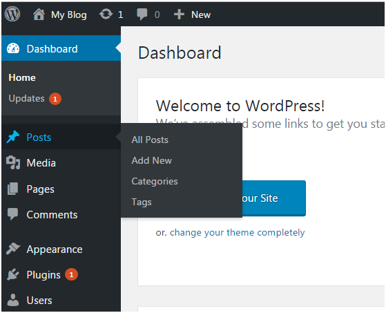
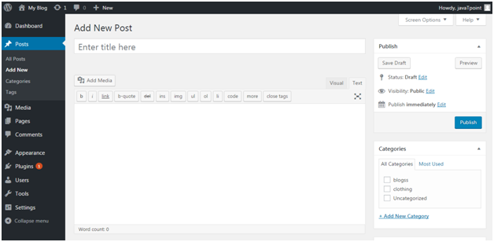
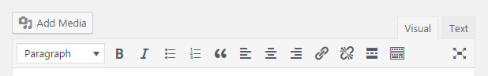
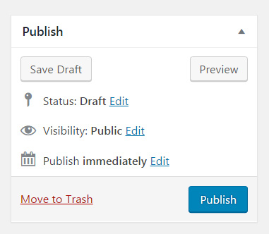
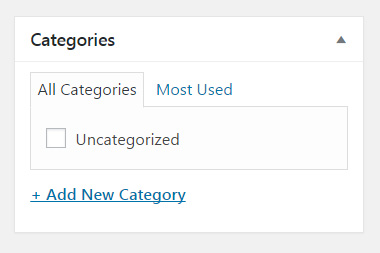
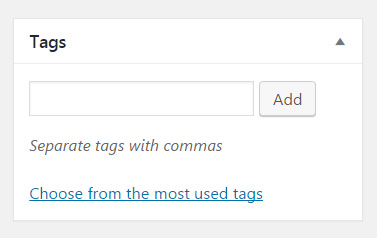
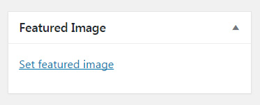
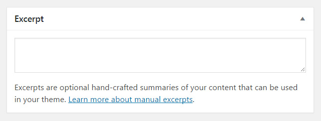

WordPress Post
DASHBOARD >> Posts
Once you’ve clicked on Posts Menu,the following screen will appear
Add New Post
Once you’ve clicked on Add New, you can work with the post.
Title - Enter the title of your post
Content - Here you have to write content of your post.
In Visual mode, you can write in normal format. In Text mode, you can write in HTML format.
Preview - This button allows you to have a look on your post before publishing it.
After filling post content we can click Publish button . It means you are ready to publish your blog on your site.
Add Media
On top of the content area (and just below the title), click the big “Add Media” button to open Media Library. Here you can select previously uploaded images, add new ones, create galleries and so much more.
Publishing Options
On the right-hand side of the post screen, several publishing options are waiting for your selection.
Save Draft Button - If you click on the Save Draft button, WordPress will save everything you’ve done so far on the page as draft.
Status - While still working on your article, by default, the status will be set to draft. By changing the status to “Pending review”, you can tell your coworkers that you have finished working on the post and allow editors to review and approve it. Once you publish a post, the status will automatically change to “Published”. It is possible to alter the status of an already published post from here. You can even unpublish a post if you wish.
Visibility - Your new post can have three different visibility statuses.
- Public - allows everyone to see your new article.
- Password Protected - enter a password for the post. Only people who enter the correct password will be able to see the contents of the article.
- Private - If you privately publish the post, only users who are logged in and have editing privileges will be able to see it.
Publish immediately - By default, WordPress sets all posts to be published immediately. By clicking the “Edit” link next to this option, an article can be scheduled for publishing or set to any date.
Move to trash - If you decide to delete the post that you’re currently editing, just click the “Move to trash” option.
Formats
By default, WordPress allows ten different post formats to be used by any theme. Depending on the theme you have installed, you may have all ten, none, or anything in between.
These are ten default WordPress post formats:
- Standard the default post format
- Aside content without a title
- Gallery best used when displaying a gallery of images
- Link use a post as the link to another website
- Image show a single image
- Quote display the quoted content
- Status publish a short status update
- Video post a single video or playlist
- Audio use audio file or playlist (good for podcasts)
- Chat show a chat transcript
Categories
Add your new post to a category that you have previously created or generate a new one by clicking the link below the list. You can choose a category from the list or view the most used ones.
Tags
Describe your post with one or multiple tags. By writing tags, WordPress will autosuggest ones that you have previously used. If no suggestions appear, add a new tag by clicking the “Add” button or hitting the Enter key.
If you’re more of a visual type, you can click the “Choose from the most used tags” link found below.
Featured Image
A featured image (also known as post thumbnail) is one picture that will represent your post. In the past, only some themes allowed this option. Today, almost all WordPress themes support featured images.
To insert a featured image for the post, click the “Set featured image” link. From this new window, select a picture that you’ve already uploaded, or add a new one from your computer.
Excerpt
Excerpts are short summaries that you need to write manually. Depending on the theme you use, you can display excerpts on your homepage where you show all of the latest posts.
If you don’t use the manually written excerpt option, WordPress will automatically take the first few sentences of your post to create an extract when needed.
Discussion
By default, WordPress allows comments on each one of your posts. But if you want to turn off comments just for that one post, this is the place to uncheck the option. You can also disable trackbacks and pingbacks here.